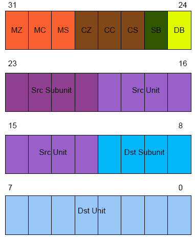
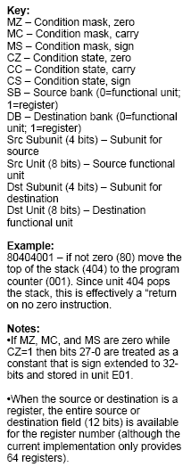
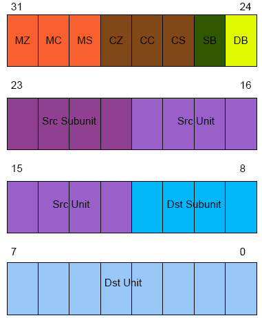
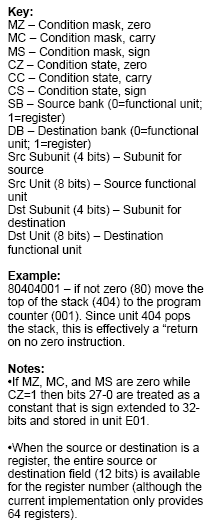

Figure 1: Instruction Format
Dr. Dobb's Digest December 2009
Al Williams straddles the hardware and software line and has authored books ranging from MFC Black Book to Build Your Own Printed Circuit Board.. He can be contacted at al.williams@awce.com.
One of the original "Star Trek" television episodes involves patients at a facility for the criminally insane. One of the inmates quotes some lines from Shakespeare and announces that she wrote it yesterday. Another character tells her that it had been written by the bard in the past. The woman replies, "Which does not alter the fact that I wrote it again yesterday!"
I suppose in the computer industry it is particularly difficult these days to have a truly original idea, even if you arrive at your idea independent of prior work. I had that experience several years ago. I had just finished a 16-bit CPU design based loosely on Caxton Foster's Blue machine in his excellent (albeit dated) book Computer Architecture. (Yes, I do have strange hobbies.) Like Foster's original, my machine has what I think of as a 1970's minicomputer architecture -- its very similar to a DEC or DG or HP machine from that era. I was contemplating starting a new project using some sort of RISC (Reduced Instruction Set Computer) architecture. RISC's advantages are well known. Simplifying the CPU core by reducing the complexity of the instruction set allows faster speeds, more registers, and pipelining to provide the appearance of single cycle execution. RISC has been so popular that even your PC today probably uses a RISC core that is emulating a non-RISC processor!
So I thought if the "R" in RISC is for reduced, how far can you reduce the instruction set of a computer and still make it do useful work? I realized that you could, in fact, make a perfectly functional computer with only a single simple instruction. I drew up several instruction set architectures and became very enamored of the idea. However, a search on the Internet showed that I wasn't the first person to have this realization. Although they aren't extremely common, OISC (short for "One Instruction Set Computers") have been proposed and built before. The type I had designed was known as a TTA (Transfer Triggered Architecture). There have been a few academic designs using this architecture as well as at least one commercial microcontroller (the Maxim MAXQ).
However, I still did not see some of the design features I wanted to explore in any existing implementation so I pressed ahead with the design of my CPU, the One-Der (with apologies to Tom Hanks). In this article, I describe One-Der -- a 32-bit TTA CPU that operates at roughly 10 MIPS. I also show you how and why you might actually want to use it. The complete source code and related files are available here. A demonstration of how you program One-Der is presented in this video.
When I tell this story in person, people are usually squirming with the inevitable question: What's the one instruction? It turns out there's several ways to construct a single instruction CPU, but the method I had stumbled on does everything via a move instruction (hence the name, "Transfer Triggered Architecture").
In a way, it is almost object oriented. Instead of normal instructions, you have functional units that expose addressable registers. Moving information into a "register" causes the functional unit to change. So as a simple example, consider a math functional unit -- what would pass for the accumulator on a normal processor. The functional unit might expose three registers. Register 0 would allow you to read and write data to the accumulator. Writing to register 1 would cause the unit to add the value you wrote to the accumulator while register 2 would subtract the value.
That's an overly simple example, but by building complex functional units you can build up an "instruction set" that does anything you want. Meanwhile, the basic CPU architecture remains very simple and stable. It simply orchestrates gating the contents of a register on the bus and then gating the bus into another register.
In practice, One-Der is a bit more complex, but not much. The main CPU is about 140 lines of Verilog code -- less if you deduct the comments. However, this main portion is really just defining the bus between functional units. All the real work is in one of the functional units -- even the program memory and the program counter are functional units.
The main bus has two other functions that augment the transfer of data between functional units. First, it allows for conditional transfers. That is, based on a set of conditional tests, a transfer may not be allowed and the bus cycle becomes a NOP instruction.
The second augmentation is the ability to load constants. The program counter functional unit has a special operation: load the next 32-bit word into a special constant register (which is also part of the PC's functional unit). Because many constants don't require the full 32-bit word, there is also a way to use illegal conditional instructions to load shorter (28-bit) constants in a single 32-bit bus cycle (using the same constant register). In addition, one or more "constant" functional units can make common constants (like zero, for example) easily accessible to any instruction.
This points out one of the major advantages of the One-Der architecture. Need a special set of constants that I don't use? It is trivial to add a new functional unit with your constant. A practical functional unit might be more difficult, but the interface of your logic to the CPU is trivial. Each functional unit has an 8-bit address, so you simply need to create a module for your functional unit and instantiate it in the CPU at an unused address. By convention, all the functional units have the same module signature to a point and then custom parameters follow the standard ones. It is often simpler to test individual functional units separately before integrating them with the main CPU, another advantage.
For example, Listing 1 shows the roughly 70 lines of Verilog that make up the current constant unit. The address is one of the parameters passed in when you instantiate the module.
'timescale 1ns / 1ps 'default_nettype none /********************************************************************** One-Der Copyright 2006, 2007, 2008, 2009 by Al Williams (alw@al-williams.com).
This file is part of One-Der.
One-Der is free software: you can redistribute it and/or modify it under the terms of the GNU General Public Licenses as published by the Free Software Foundation, either version 3 of the License, or (at your option) any later version.
One-Der is distributed in the hope that it will be useful, but WITHOUT ANY WARRANTY: without even the implied warranty of MERCHANTABILITY or FITNESS FOR A PARTICULAR PURPOSE. See the GNU General Public License for more details.
You should have received a copy of the GNU General Public License along with One-Der (see LICENSE.TXT). If not, see http://www.gnu.org/licenses/.
If a non-GPL license is desired, contact the author.
This is the FU that contains 16 useful constants.
***********************************************************************/ module FConstant(input wire xreset, // reset input wire clk0, // clock input wire invclk, input wire phase, inout wire [31:0] dbus, // data input wire [12:0] srcadd, // source add input wire [12:0] dstadd, // dest add (not used) input wire [12:0] cfg, // configured address output wire dta, // data transfer ack input wire dtain); // dta input wire
wire oe; // tri state control wire [3:0] subunit; // match addresses assign oe=srcadd[7:0]==cfg[7:0]&& srcadd[12]==cfg[12]; assign subunit=srcadd[11:8]; assign dta=1'b1; reg [31:0] const; assign dbus=oe?const:32'bz;
// set up the constants always @(subunit) begin case (subunit) 4'b0000 : const=32'b0; 4'b0001 : const=32'b1; 4'b0010 : const=32'h2; 4'b0011 : const=32'h80000000; 4'b0100 : const=32'h4; 4'b0101 : const=32'hff; 4'b0110 : const=32'hff00; 4'b0111 : const=32'hff0000; 4'b1000 : const=32'hff000000; 4'b1001 : const=32'h00000010; 4'b1010 : const=32'ha; 4'b1011 : const=32'hf; 4'b1100 : const=32'hf0; 4'b1101 : const=32'h80; 4'b1110 : const=32'haaaaaaaa; 4'b1111 : const=32'hffffffff; default: const=32'h0; endcase end
endmodule
To add a new set of constants, simply copy and paste this module to a new Verilog file, rename the module, and instantiate it with a new address in the main CPU file (oneder.v) and you can put 16 more constants in your new custom instruction set. For example, here's the line that includes the existing unit:
// Constant source (unit 0) FConstant constant(xreset, clk0,invclk,phase, dbus, src, dst, 13'h0, dta, dta);
Constants are a simple example, but perhaps your program would benefit from three accumulators or four different loop counters. No problem. Just instantiate the existing module multiple times, each with a different address. It is just as easy to remove modules to save space on the FPGA if you find your program never uses a particular module.
While it is handy to be able to add, multiply, and subtract functional units by hand, a ripe area of research is using this architectural style in reconfigurable computing applications. A compiler could determine the optimum number and types of functional units and literally build a custom CPU on the fly optimized for the task at hand.
There is one other feature that functional units can use to manipulate the bus. The bus manages a line known as dta (data transfer acknowledge). This bit allows either the sender or the reciever to stall the bus if necessary. This can be useful for slow external memory access for example. The FIO functional unit takes advantage of the bus stall to implement a delay subfunction.
In addition to functional units, One-Der has a set of registers that can act as the source or destination of a transfer. These act like registers on any garden-variety CPU; they simply store values until needed.
As you might expect, the instruction set is very simple. The way it is laid out it is very easy to read and write the hex op codes directly (although I have a cross assembler I'll tell you about shortly). Figure 1 shows the basic format. Note that the functional units have an 8-bit address and a 4-bit subfunction code.


So an instruction that doesn't use registers and has no conditions looks like:
00 sSS dDD
Where SS is the source unit, s is the source sub unit, and the D's represent the destination unit and sub unit. Constants are easy to identify also. The short form takes advantage of the fact that if the condition mask is zero, there's no meaningful reason to have the condition match bits set. So a short constant will have a 1 in the first position and you simply have to mask the top bit off. So 1000003F is the constant 3F hex (note that the constants are sign extended to 32-bits so 18000000 is the constant F8000000). Full 32-bit constants start with 00000F01 followed by the full 32-bit constant (this requires two cycles to execute and does not respect condition codes).
Of course, the real meat to this processor isn't the format of the instructions, it is the possible values for the source and destination. Table 1 shows the standard functional units and their addresses. Note the constant functional unit is unit zero which allows for some mnemonic subfunctions. So 00000001 (source unit 0, subunit 0) loads a zero into the program counter while 00A00001 loads a constant A. Of course, that only goes so far and some of the subfunctions are just arbitrarily assigned.
Although every instruction is technically a move, you might prefer to give some mnemonic aliases to special moves (my cross assembler does this). For example, moving something into the program counter is a jump. A subroutine return involves moving the top of the stack to the program counter.
You might be wondering: This all sounds interesting, but how can I implement a custom CPU? The answer is to use a Field Programmable Gate Array (FPGA) device. (For more on programmable logic devices like FPGAs, see my article Programmable Logic and Hardware).
In a nutshell, an FPGA implements a large number of logic cells and a programmable way to interconnect them. You can create your design by drawing schematics (only feasible for small designs) or by using a hardware description language (like Verilog, the language used to implement One-Der). A program running on a PC takes your description and converts it into a configuration of the FPGA's logic cells. The result is downloaded to the FPGA by the PC's parallel port. You can also download the result to a EEPROM which can automatically configure the FPGA on startup once you are happy with your design.
Working with FPGAs used to be very expensive. Today, vendors offer development boards that work with free software for well under US$100. My prototype of the One-Der architecture works on a development board available from Digilent (see Resources) that has the equivalent of about 1,000,000 logic gates (it costs a bit more than $100, but was well under $200). In addition to the Xilinx Spartan 3 FPGA chip and assorted support functions, the board also contains some memory devices along with a handful of I/O devices such as switches, LEDs, and a serial port. Of course, none of these things do anything unless your logic makes them do something. The One-Der prototype can read the switches, light the LEDs, and implements a serial port you can use in your programs. It also provides 16 bits of general-purpose outputs and another 16 bits of input available on the board's edge connector.
If you aren't familiar with Verilog, you'll notice it strongly resembles C. However, the way it is handled is very different since the result isn't object code, its a hardware configuration. Consider the following C snippet:
x=a|b|~c; y=a&b;
This actually generates code that sets x at some discrete time, then sets y a short time later. After this code executes, x and y won't change unless the program reexecutes this code, or executes some other code that modifies x and y.
In Verilog you might write:
assign x=a|b|~c; assign y=a&b;
This will create several logic gates; one that drives the x output and one that drives the y output. These gates will constantly compute the equations in hardware and the value of x (or y) at any instant will reflect the current values of the inputs. There's no sequence of computations implied by the line order. The resulting logic is all in parallel.
You can specify gates directly or use other methods, but I find them all clunky compared to using assign. For completeness though, here's two other ways you could drive the x output equivalently:
or(x,a,b,~c);
always @(a,b,c) x=a|b|~c;
All of these build asynchronous logic in Verilog. You can also create synchronous logic, which makes up the bulk of the CPU. With synchronous logic, everything is referenced to a clock pulse. This way outputs have until the next clock pulse to "settle" and you can build very complex logic without worrying too much about the different delays encountered by the various signals.
For example, consider generating parity on a serial bit stream. The idea is to use a flip flop to remember the current parity value. When the serial data arrives (at the rising edge of the clock) the new parity will be the old parity exclusive-ored with the data bit. Here's a Verilog module to implement this logic:
module serialparity(input clk, input reset, input data, output reg even, output odd)
assign odd=~even; always @(posedge clk) if (reset) even=1'b0; else even=even^data; endmodule
This defines a module (like a parallel subroutine) that "executes" on each positive clock edge. If you read C, you can probably puzzle out most of the syntax. The 1'b0 means a literal zero that is 1-bit long (the b is for binary). In English, the module takes each data bit and exclusive or's it with the previous parity value to form the next parity value.
Of course, a complete Verilog tutorial is beyond the scope of this article, but there are plenty of resources on the Internet. The CPU is relatively simple, but it probably isn't the ideal first Verilog project. On the other hand, adding functional units and manipulating existing ones is well within the reach of the Verilog neophyte.
Assuming you have a bunch of Verilog, how do you get it to the hardware? First, most designs will require more than just straight Verilog. You also need constraints which tell the software how to handle certain parts of the Verilog. For example, the parts of One-Der that read the push buttons or drive the LEDs must connect to certain external pins on the FPGA. Without constraints, the translator software will assign them to arbitrary pins which could cause results ranging from things not working, to physically damaging the device by shorting out something on the board.
There are several ways to include constraints. You can put special comments in your Verilog, but I prefer to use a constraint file. The Xilinx tools even include a GUI editor for constraint files to simplify the task.
There are other files you may need. The Xilinx tools have a variety of wizards and code generators that allow you to use GUIs to generate special functions (for example, memory or clock circuits). These files will also be a part of your project.
To map these operations to the typical software development flow, you can consider ISE a compiler and linker. The synthesis is roughly analogous to compiling source code to assembly language and the mapping is a little like an assembler converting to binary codes. The place and route step is somewhat like linking everything together, although that analogy doesn't cover everything since a real linker can just put all the output objects in any order. The FPGA router has to use the limited interconnects to get everything that needs to communicate connected.
For smaller designs, you can also use ISE to simulate your work without downloading to the actual IC. In fact, I often do this with small parts of One-Der, but the entire CPU is so complex it is difficult (and slow) to simulate well so I usually try to debug directly on the hardware (although simulating an individual functional unit is relatively easy). Xilinx also provides a tool (but not for free) called ChipScope that allows you to perform basic logic analysis by building a dedicated logic analyzer into the FPGA alongside your design. The analyzer accepts commands and sends data to your PC via the FPGA's JTAG port (the same port you use to program the FPGA during development).
For creating One-Der programs I have a simple cross assembler that uses a combination of awk, and the system's C compiler to output binary in several formats. The mem2flash script (available here) lets you load binary from the assembler directly to the chip's on board flash without having to rebuild the processor just to get a new program loaded.
The complete source code for One-Der is available here. Here's a road map to the source code and a summary of what you'll find in each one:
There are many ways to solve any problem using the One-Der architecture. For example, conditional bus transfers allow you to make decisions. But functional units might use other methods. For example, the loop unit requires you to move a subunit into the program counter. The value of the subunit will vary depending on if the loop is complete or not.
Each unit receives a clock signal and the inverted clock (useful for the Xilinx stock memory which always looks for a rising edge). There is also an alternating phase signal that provides two distinct clock pulses (four clock edges, since the CPU works on both edges of the clock). The clock cycles have the following purposes:
The CPU uses program information in clock B for some units (mostly those requiring time to set up memory transfers) and in clock C for others. This isn't strictly necessary, but it helps the Xilinx tools perform better since there s more time for signals to propagate for most functional units.
Functional units can be simple or complex. If a functional unit needs more than one bus cycle you can easily stall the bus by asserting the dta line in the functional unit. You can implement bus stalls in several ways. For example, suppose you develop a pipelined multiplier functional unit that requires 64 clock cycles to operate. One approach would be to stall the bus when the final operand is sent to the unit. Or you might prefer to let the unit calculate and only stall the bus if the program attempts to read the result before the pipeline completes.
Listing 2 shows a simple monitor program that allows direct exploration of the One-Der architecture. Of course, you have to share resources with the monitor software. The monitor lets you manually key in small programs or manually set and read functional units.
;; Simple "monitor" for One-Der
;; Williams 1 March 2009
;; assume default stack is ok
ORG 0
;; Registers used for fast subroutine calls
##define CRLF 60
##define HEXO8 61
##define USEND 62
##define READHEX 63
;; data registers
##define HEXNUM 59
;; Put something on the display so we know we are running
LDRIQ 0x1234,FIO_DISP
;; init common subroutine calls
LDRIQ crlf,R(CRLF)
LDRIQ hexout8,R(HEXO8)
LDRIQ uartsend,R(USEND)
LDRIQ readhex,R(READHEX)
;; Print a string to the terminal (kill this for more room)
CALLQ banner
top:
LDRIQ '?', FACC ; prompt
CALLR USEND
LDRIQ ' ', FACC ; note that call clobbers FIMM
CALLR USEND
CALLQ uartrx ; get a character
CALLR USEND ; echo
;; we know about several commands
;; fu:
;; p x - print x
;; s xy - set y=x (note no spaces so s 0fe1fe for example)
;; c n y - set y=n (constant)
;; reg:
;; d r - print r
;; r n r - set r=n (constant)
;; f add data...<esc> - Write to flash (working)
;; g add - Call address
;; v add count - view flash add
;; you can backspace in a number as long as you haven't
;; entered a character <'0' yet
;; Vector for each command
;; check for p
MOV FACC,FACC2
LDRIQ 'p',FACC_SUB
LDIQ print
MOVZ FIMMV,FPC
;; check for v
MOV FACC2,FACC
LDRIQ 'v',FACC_SUB
LDIQ view
MOVZ FIMMV,FPC
;; check for f
MOV FACC2, FACC
LDRIQ 'f',FACC_SUB
LDIQ flash
MOVZ FIMMV,FPC
;; check for s
MOV FACC2, FACC
LDRIQ 's',FACC_SUB
LDIQ setfu
MOVZ FIMMV,FPC
;; check for c
MOV FACC2, FACC
LDRIQ 'c', FACC_SUB
LDIQ setfucon
MOVZ FIMMV,FPC
;; check for d
MOV FACC2, FACC
LDRIQ 'd', FACC_SUB
LDIQ dispreg
MOVZ FIMMV,FPC
;; check for r
MOV FACC2, FACC
LDRIQ 'r', FACC_SUB
LDIQ setreg
MOVZ FIMMV,FPC
;; check for g
MOV FACC2, FACC
LDRIQ 'g', FACC_SUB
LDIQ go
MOVZ FIMMV,FPC
;; not found
JMPQ top
;; View flash
view: CALLR READHEX ; read address
MOV FACC2, FPC_PGMRDADD
CALLR READHEX ; read count
;; Set up loop
MOV FACC2, FLOOP_IEND
MOV FZERO, FLOOP_I
MOV FONE, FLOOP_IINC
LDRIQ viewloop, FLOOP_IADD
viewloop:
MOV FZERO, FPC_PGMRD ; read flash
MOV FIMMV, FACC ; print
CALLR HEXO8
LDRIQ ' ', FACC ; space between words
CALLR USEND
MOV FLOOP_IADD,FPC ; loop
CALLR CRLF ; done
JMPQ top
;; Call a user subroutine
go: CALLR READHEX ; get address
MOV FACC2,FPC_CALL ; do it
JMPQ top ; done
;; Set a register to a constant
setreg:
CALLR READHEX ; get constant
PUSH FACC2
CALLR READHEX ; get register #
LDRIQ 0xFFF,FACC2_AND
LDRIQ 0x1008000,FACC2_OR ; build instruction to exec
JMPQ setfu0 ; from here out, same as setting a FU
;; printa register
dispreg:
CALLR READHEX ; which register?
LDRIQ 12,FACC2_SHL
LDRIQ 0xFFF000,FACC2_AND ; get legit part
LDRIQ 0x2000002, FACC2_OR ; build instruction
JMPQ dispexec ; from here out, same as printing FU
;; Set a Functional unit
;; Note this just sort of execs one instruction
setfu: CALLR READHEX ; get src and dest (e.g., 0fe002 is switch->acc)
JMPQ setfu0 ; from here out, same as set FU constant
setfucon:
CALLR READHEX ; get constant
PUSH FACC2
CALLR READHEX ; get destination
LDRIQ 0xFFF,FACC2_AND ; build instruction
LDRIQ 0x008000,FACC2_OR
setfu0: ; execute instruction
MOV FACC2,FPC_WDATA
LDRIQ execute,FPC_WADD
MOV FZERO,FPC_WRITE
POP FACC2
CALLQ execute
JMPQ top
;; Print an FU
print:
CALLR READHEX ; which FU?
MOV FACC2,FACC ; print fu address:value
CALLR HEXO8
LDRIQ ':',FACC
CALLR USEND
LDRIQ 12,FACC2_SHL
LDRIQ 0xFFF000,FACC2_AND ; get legit part
LDRIQ 0x002, FACC2_OR ; build instruction
dispexec:
MOV FACC2,FPC_WDATA ; execute instruction and print
LDRIQ execute,FPC_WADD
MOV FZERO,FPC_WRITE
CALLQ execute
CALLR HEXO8
CALLR CRLF
JMPQ top
;; write to flash
flash:
CALLR READHEX ; Get address
MOV FACC2,FPC_WADD
flashloop:
MOV FPC_WADD,FIO_DISP ; echo address to LED display
CALLR READHEX ; get data value (FACC2 is value FACC is terminator)
LDRIQ 0x1B,FACC_SUB ; test for Esc
JMPZQ top
MOV FACC2,FPC_WDATA ; write data
MOV FZERO,FPC_WRITE
JMPQ flashloop ; and loop
;; Several commands have to execute a dynamic instruction
;; So the monitor builds a command and places it here
;; and then calls execute
execute: ; this is how we overwrite flash
MOV FZERO,FZERO
RET
;; Canned routines for UART, etc.
##include library.inc
;; print a stored banner
banner:
LDRIQ message,FPC_PGMRDADD
bann1:
MOV FZERO,FPC_PGMRD
MOV FIMMV,FACC
RETZ
CALLR USEND
JMPQ bann1
message:
; note stringpack crams text into words
;; while string outputs individual bytes
STRING "1Mon"
DATA 13
DATA 10
DATA 0
END
What's next for One-Der? There's an endless number of functional units that could be written, of course. In addition, I have plans to add time-based, external, and debugging interrupts. An external memory interface is also in the works. However, I'm close to shifting gears to think more about tools. A simple example would be a "wizard" style interface to select functional units and generate a custom instance of One-Der. I'm even more interested in working on compiler support to automatically select the optimum number and types of units. Perhaps one day, a One-Der savvy compiler would even take advantage of the ability to partially reconfigure the FPGA to change the functional unit distribution on the fly!
Even so, One-Der is imminently usable as it is. Unlike many other FPGA CPU cores, this one is very simple to customize even if you aren't an expert on its internals. Applications that can benefit from custom instruction in hardware -- things like digital signal processing, for example -- are ideal for One-Der since you can implement parts of your algorithm in hardware and then easily integrate those parts with the CPU.
Road Map
More About Units
The Future
Listing 2
Resources